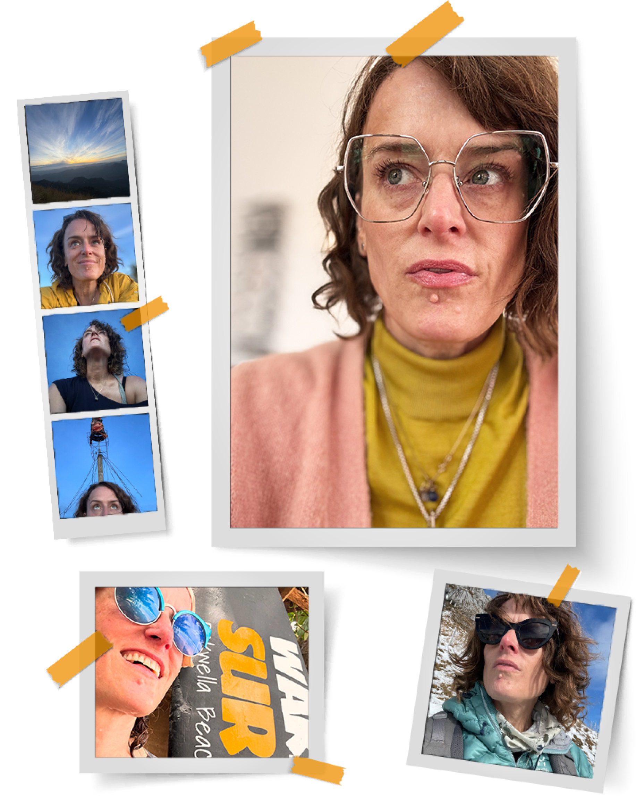

Hi! I’m Kelly.
I’m an economist by training (BA Hons, Econ, UBC) and a designer by choice. It might seem a bit of an odd combination, but I see them as two sides of the same coin: Economics is the study of human choice while commercial design is always seeking to inform, encourage and influence human choice. Full circle. As a creative, I’m driven by curiosity and problem solving. My process is closely tied to Design Thinking: listen, ideate, research, test and iterate. Then deliver. And continue listening, adjusting, experimenting and learning. Always learning.
Over my career I’ve developed an approach to brand that starts with storytelling, is founded in values and belongs to the whole organization—not just the creative team. And brand isn’t decoration. It’s one of the most powerful business tools an organization has. And when a brand is working to its full potential, people aren’t just complying with guidelines—they’re proud to carry it out into the world.
I’ve also built high-performing teams from the ground up, across time zones, geographies, languages and cultures. I lead from the middle, believing that the best ideas can come from anywhere and everyone deserves to be heard. I maintain my skills by delivering work, expanding my experience and taking every opportunity to learn. The best leaders can jump in and work alongside their team as much as they advocate for them and help them achieve their potential.
In mid-2025, after a long tenure at PwC Canada, I took six months off to decompress and reconnect with my own core values. I travelled through Sri Lanka, Scotland and Europe; completed the IDEO U AI + Design Thinking certificate—and thought seriously about what I want to build next. I came back with more clarity and more energy than I’d had in years.
I’ve spent my whole life fascinated by the world we live in. I’ve been snowboarding for most of my life (I’m pretty good!) and I’ve been riding waves (poorly) all over the world for almost 20 years. I spent 40 days traversing the Northern Patagonian Icecap, learning expedition mountaineering and avalanche safety. I collect transit cards, toothpaste and tote bags. I speak Spanish fluently after living in Caracas and Buenos Aires. I love museums, riding trains and walking through cities I don’t know yet. Our planet is genuinely remarkable and I intend to keep going out in it as long as I can.
Get in touch